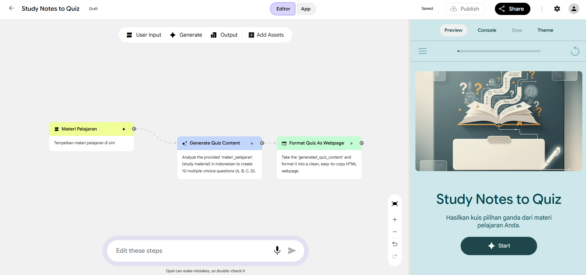
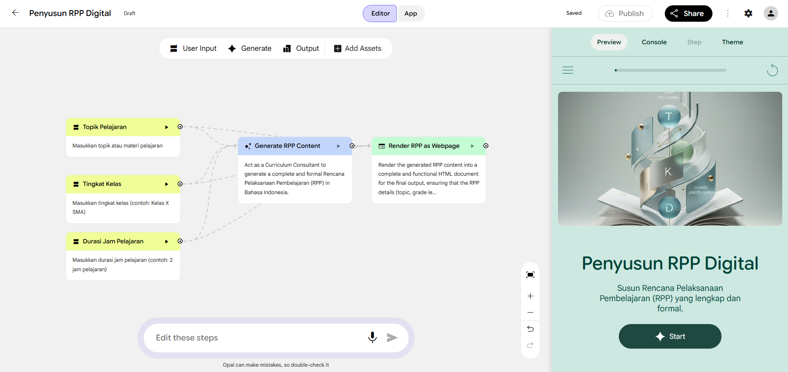
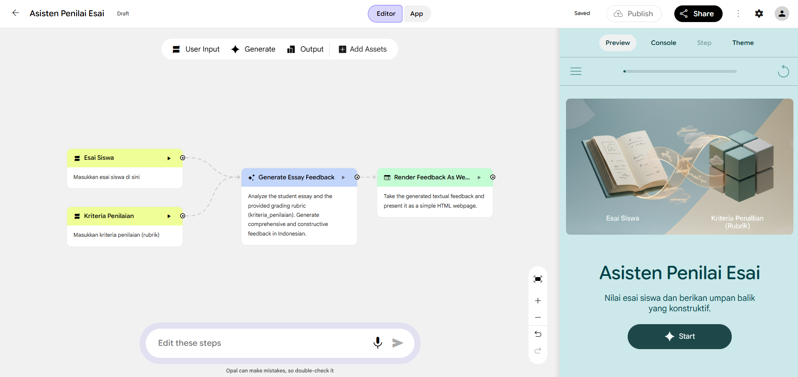

Asesmen Otomatis
Quiz Master AI
Konversi materi pembelajaran menjadi kuis interaktif secara instan menggunakan generative AI.
Memahami cara kerja AI, bias, halusinasi, dan regulasi UU PDP untuk keamanan data sekolah.
Menguasai teknik instruksi presisi untuk mengotomasi tugas administrasi guru yang membosankan.
Merakit asisten pintar bertenaga Opal Google yang menguasai silabus dan gaya bicara Anda.
Implementasi Roadmap 30 hari untuk otomasi RPP, asesmen, dan narasi raport di sekolah.

Konversi materi pembelajaran menjadi kuis interaktif secara instan menggunakan generative AI.

Penyusun rencana pembelajaran digital yang kreatif dan mengacu pada standar pendidikan terbaru.

Asisten penilaian esai yang memberikan umpan balik objektif dan saran perbaikan untuk siswa.